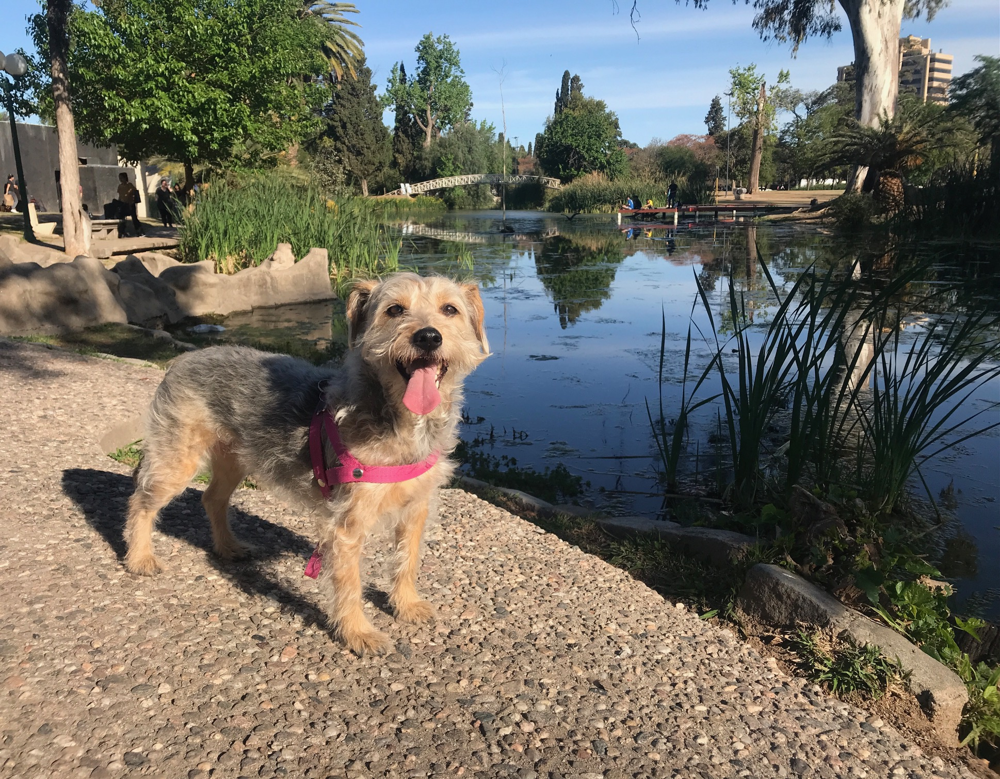

Hi!
My name is Cecilia (seh-see-lyah) and I’m a software engineer turned UI designer from Argentina.
I’ve been fascinated by digital interfaces since the beginning of my career, reading and studying UX even before it got to be called that way. Either by writing user manuals, or designing the best-looking documents, presentations, reports, etc, throughout my entire career I’ve put users’ needs first. Before UI, I worked with analysts, testers, developers, and more, so I understand how software is made and I speak fluent “Programmer” 😉
I'm a team player, I participate but also encourage others to be part of the process, I believe that everyone has something great to share, we just need to listen.
What do I do when I’m not browsing fonts
I live in Córdoba, Argentina. I love to read, travel, walk, and have picnics at the park or any spot with the sky over and grass under.
I love animals, I foster puppies or I volunteer from time to time in animal rescue missions, but at home, I work for Frida, who’s my dog and boss, she asked me to mention her so here she is:
